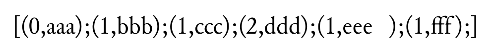

オプショナル引数
このページでは、SATySFi におけるオプショナル引数の使い方について解説します。
注意: SATySFi のオプショナル引数に関する公式ドキュメントは執筆時点ではまだ無いので、このページに書かれていることは変更される可能性があります。
オプショナル引数とは
オプショナル引数とは、関数の引数であって省略可能なもののことを言います。現在 SATySFi ではラベル無しのオプショナル引数が使えるようになっています。
たとえば LaTeX の \sqrt は \sqrt{x + y} と書いて二乗根を書くこともできれば、\sqrt[3]{x + y} と書いて三乗根を書くこともできます。この [3] の部分が省略可能な引数です。省略された場合はデフォルトの挙動をし、明示された場合はそれに応じた挙動をします。
SATySFi においても、LaTeX と記法は違いますがオプショナル引数を使うことができます。
参考: ML Day #2 で発表された gfn さんによる解説「ラベルなしオプション引数の型システムと型推論」が公開されています。オプショナル引数導入の動機と、その型システムについて書いてあります。
オプショナル引数を持った関数の定義
SATySFi において (ラベル無しの) オプショナル引数を持った関数を定義するには、引数の先頭に ?: をつけます。2 つ例を挙げてみます。
コード例
let range ?:startopt stop =
let start =
match startopt with
| None -> 0
| Some(n) -> n
in
let-rec aux n =
if n >= stop then []
else n :: (aux (n + 1))
in
aux start
コード例
let-inline ctx \enlarge ?:coloropt it =
let size = get-font-size ctx in
let color =
match coloropt with
| None -> Color.black
| Some(c) -> c
in
let ctx =
ctx |> set-font-size (size *' 1.5)
|> set-text-color color
in
read-inline ctx it
オプショナル引数の型
SATySFi では、t 型の値が渡されることが期待されるオプショナル引数自体の型は t option 型になります。
t option 型とは None か Some(〈t 型の値〉) で構成される型です。オプショナル引数においては「オプショナル引数が渡されなかった場合」を None、「a が渡された場合」を Some(a) で表します。
関数の内部でオプショナル引数を評価する際には、この None と Some(a) を上の例のようにパターンマッチすれば良いです。いちいち match を書くのが面倒くさければ、option.satyg の Option.from : 'a -> 'a option -> 'a を使うと便利です。
コード例
% 上の例を書き直すとこうなります
let color = Option.from Color.black coloropt
オプショナル引数の位置
SATySFi では、関数の最後の引数をラベル無しオプショナル引数にすることは構文上できません。現状少し分かりにくいエラーメッセージが出るので気づきにくいため、ご注意ください。
間違ったコード例
let f x y ?:zopt =
let z = Option.from 42 zopt in
x + y + z
コード例を組版しようとしたときのエラー例 (SATySFi version 0.0.3)
! [Type Error] at "must-error.saty", line 6, characters 25-29:
undefined variable 'zopt'.
オプショナル引数の渡し方
SATySFi でオプショナル引数を渡すには、引数の先頭に ?: を付けます。ここでは 2 つ例を示してみます。
例1: 関数
コード例
+p {
\show-int-list(range 10);
}
+p {
\show-int-list(range ?:3 10);
}
コード例の組版結果 (SATySFi version 0.0.3)

例2: インラインコマンド
コード例
+p {
あいうえお \enlarge{かきくけこ}
さしすせそ \enlarge?:(Color.red){たちつてと}
}
コード例の組版結果 (SATySFi version 0.0.3)
オプショナル引数が複数ある場合
ラベル無しオプショナル引数は複数書くことができます。複数のオプショナル引数を適用する場合、順番が大事です。先頭側にあるオプショナル引数が優先的に処理されます。
コード例
% オプショナル引数が 2 つあります
let f ?:xopt ?:yopt z =
let x = Option.from 0 xopt in
let y = Option.from 0 yopt in
`x = `# ^ (arabic x) ^ `, y = `# ^ (arabic y) ^ `, z = `# ^ (arabic z)
in '<
+p {
% 2 つとも省略した例
\show-string(f 3);
}
+p {
% 2 つとも適用した例
\show-string(f ?:1 ?:2 3);
}
+p {
% オプショナル引数を 1 つだけ適用すると、x の方に入ります
\show-string(f ?:1 3);
}
+p {
% x を飛び越して y だけに渡すこともできます
% ?* と書くとオプショナル引数をひとつ無視できます
\show-string(f ?* ?:2 3);
}
>
コード例の組版結果 (SATySFi version 0.0.3)

メモ: 現状 SATySFi のオプショナル引数はラベル無しなので、複数のオプショナル引数がある場合、適用する側からは順番でしかどの引数なのか判断できません。将来的にラベル付きオプショナル引数やレコードのオプショナルフィールドが実装されるかもしれないので、そうなるとより使いやすくなるでしょう。
オプショナル引数を持った関数の型
オプショナル引数を持った関数をシグネチャに書こうとすると型を書く必要があります。SATySFi において通常の関数型は a -> b と書きますが、オプショナル引数を受け取る関数の型は a ?-> b と書きます。
また direct の型に書く場合は引数の末尾に ? と書くことでオプショナル引数を表現することができます。
コード例
module Example : sig
val range : int ?-> int -> int list
direct \enlarge : [color?; inline-text] inline-cmd
end = struct
let range ?:startopt stop =
let start = Option.from 0 startopt in
let-rec aux n =
if n >= stop then []
else n :: (aux (n + 1))
in
aux start
let-inline ctx \enlarge ?:coloropt it =
let size = get-font-size ctx in
let color = Option.from Color.black coloropt in
let ctx =
ctx |> set-font-size (size *' 1.5)
|> set-text-color color
in
read-inline ctx it
end